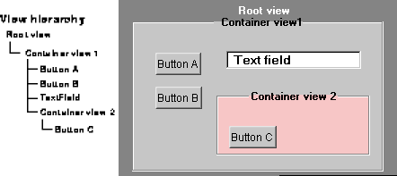
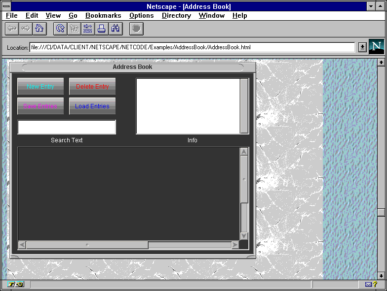
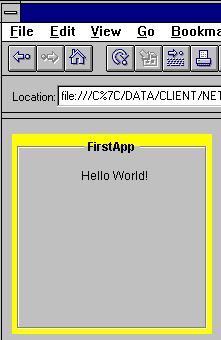
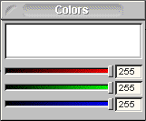
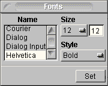
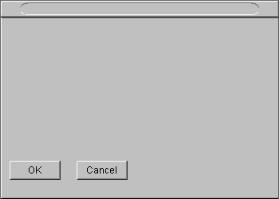
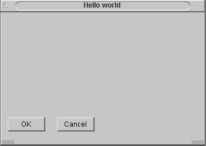
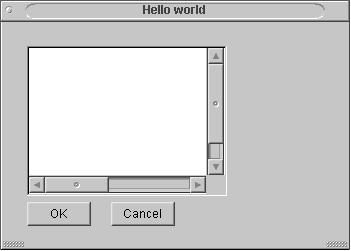
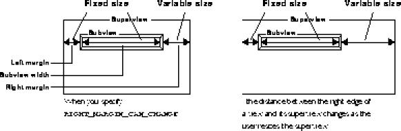
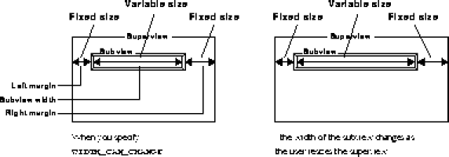

View class contains the basic functionality for drawing and receiving events. Objects that draw or receive events must be subclasses of View, so that they can inherit this functionality. For example, because the Button class is a subclass of View, it can draw its border and title on screen and react to user clicks.
This chapter discusses how to design the visual appearance of an application by assembling components. See "Handling events" on page 45 and "Drawing to the screen" on page 35 for information on these topics.
View subclasses. The netscape.application package already includes most of the components you need to design a user interface. Each component is defined in a separate class in netscape.application. For example, a button is defined by the class netscape.application.Button. The classes that define components contain constructors to instantiate the component and methods that customize its appearance and behavior.
setBackgroundColor and setEditable methods of the netscape.application.TextField class.
The following classes in the netscape.application package of the IFC library let you create components:
Button. Allows users to issue a command, such as accepting or canceling a dialog box, by clicking a component that looks like a button.
CheckBox. Lets users specify one of two Boolean values for a specific item, such as yes/no or on/off.
ColorChooser. Lets a user specify the color of any object that accepts dragged colors, such as a color well.
ColorWell. Lets users modify the color of interface elements. When users mix a color and drag it to the color well, the color well updates the color of its associated target elements.
ContainerView. A view that you can use as a boundary or container for other components. You can tile, center, or scale an image that you place in a container view.
ExternalWindow. Appears as a native window or a dialog box on the platform that runs your applet or application. The IFC lets you create an internal window within your project, or an external window, native to the platform that runs your application.
FileChooser. Lets users load or save a file in your application or applet. The file chooser appears in an external window and lists files that you specify
FontChooser. Lets users specify the font, point size, and style of text in your application. Users can change the attributes of any text that appears in an editable text view component.
InternalWindow. Appears as a window or a dialog box within your application or applet. The IFC lets you create an internal window within your project, or an external window, native to the platform that runs your project.
ListView. Lets users select an item from a list.
Popup. Creates a pop-up menu that users from which users can issue commands.
RadioButton. Lets users specify one item in a list of mutually exclusive choices. Radio button components in the same superview are in the same group; only one of the options is available at a time.
Slider. Provides a way for users to navigate incrementally through a range of values.
TextField. Displays a string and optionally lets a user edit it.
TextView. Displays one or more strings or embedded images. It can display separate paragraphs, and it supports strings which use more than one font.
View, they all appear somewhere in the view hierarchy.
The view hierarchy allows an object that is a subclass of View to contain other subclasses of View, allowing you to break the interface down into smaller constituents. For example, a container view displays its title along its top border by making a text field one of its subviews, or a view that it owns. This hierarchy lets you treat the container view as a single unit, while enabling the container view to use other View subclasses to draw and process events falling within its bounds.
An object's position within the view hierarchy is determined by its superview, the view that contains it. The superview and any other higher view in the hierarchy are known as ancestors. The root view is the top level of any IFC application, and the ancestor of all other views.
Every view contains zero or more subviews. The subviews and all other owned view are descendants of at least one view. Every view is a descendant of the application's root view. A view can contain any number of subviews, and the overall view hierarchy can be as extensive as you need for your application.
The following example shows the relationship between a set of views:
The view hierarchy

addSubview method of a view to make any other view a subview. For example, to make an instance of TextField called nameField a subview of the application's root view, issue the following statement:
mainRootView().addSubview(nameField)Similarly, the following statement makes the
Button instance cancelButtton a subview of the findDialog window:
findDialog.addSubview(cancelButton)You create subviews for a few components in a different manner:
show method of InternalWindow to make an internal window a subview of the root view. See "Windows" on page 25.
setContentView method of ScrollView or ScrollGroup to make a view a subview of either class. See "Making views scrollable" on page 29.
showColorChooser or showFontChooser method of RootView to make a chooser a subview of the root view. See "Choosers" on page 22.
setColor method of netscape.application.RootView to specify another color for the root view or the setImage method to display a background image.
An image displayed in the root view
In an application, you must instantiate
RootView when you create an external window. In an applet, you do not explicitly instantiate RootView; it is implicitly instantiated when you create the applet. For example, the following code customizes the display of the root view when the applet initializes, but it does not instantiate RootView:
public void init() {
super.init();
// Display a tiled image in the background view
mainRootView().setImage(Bitmap.bitmapNamed("wmarble.gif"));
mainRootView().setImageDisplayStyle(Image.TILED);
}
The previous code displays a tiled image in the root view's background. The height and width of the root view are specified in the HEIGHT and WIDTH attributes of the HTML APPLET tag that launches the applet. See "Launching an applet" on page 14 for more information.
Standard components
Standard components are control elements such as radio buttons and check boxes that users manipulate to interact with an appliation. The standard components in the IFC library are subclasses of View. To instantiate a component in your application, call its constructor, then use the component's methods to change its appearance. To display the component, make it a subview of the root view or another view.
For example, the following code creates a container view and a text field. The setTitle method changes the appearance of the container view by specifying a title for it. Similarly, the methods associated with the text field object change the appearance of the text that appears within it.
public class FirstApp extends Application {
The preceding code displays the applet shown in Figure 2.4:
ContainerView container;
TextField textField;
public void init() {
super.init();
// Change the color of the background view
mainRootView().setColor(Color.yellow);
// Create a container
container = new ContainerView(5, 5, 190, 190);
container.setTitle("FirstApp");
mainRootView().addSubview(container);
// Create a text field
textField = new TextField(64, 24, 128, 24);
textField.setStringValue("Hello World!");
textField.setTransparent(true);
textField.setEditable(false);
container.addSubview(textField);
}
}
Displaying components 
Choosers
Choosers provide an interface that lets users perform commonly required tasks. The IFC provides the following choosers:

Users move the sliders to mix the color they want, or they enter RGB values for the color in the text fields. After mixing the proper color, the user drags it from the chooser to the element that will receive the color. The element displays the new color immediately.
showColorChooser method of RootView.
show method of the chooser itself.
showColorChooser, the chooser opens in an internal window that is a subview of the root view. For example, the following code displays a color chooser:
mainRootView().showColorChooser();The
showColorChooser method implicitly instantiates a color chooser and then displays it; you do not need to call the constructor of ColorChooser.
If you use the show method to display a color chooser, you can open the chooser in either an internal or external window. For example, the following code displays a color chooser in the external window extWindow:
ExternalWindow extWindow = new ExternalWindow();When you use the
ColorChooser colorPicker = new ColorChooser();
colorPicker.setWindow(extWindow);
colorPicker.show();
show method to open a color chooser, use the setWindow method to specify which window contains the chooser, as shown in the previous example.
See "Windows" on page 25 for information about internal and external windows.

Font chooser
Users manipulate the font chooser to specify the font, point size, and style of text in an application or applet. The font chooser can change the attributes of any text that appears in an editable text view component.
The FontChooser Displaying a font chooser
You display a font chooser the same way you display a color chooser, except you use the showFontChooser method of RootView. Like showColorChooser, showFontChooser implicitly instantiates a color chooser and then displays it; you do not need to call the constructor.
As with a color chooser, you can also use the show method to open a font chooser in an internal or external window. For example, the following code displays a font chooser in the internal window myWindow:
InternalWindow myWindow = new InternalWindow();
FontChooser fontPicker = new FontChooser();
fontPicker.setWindow(myWindow);
fopntPicker.show(); File chooser
Users work with the file chooser to load or save a file in your application or appllet. The file chooser appears in an external window and list files that you specify.
Displaying a file chooser
The IFC provides two constructors in the FileChooser class. To create a file chooser associated with the main root view, use the following constructor:
FileChooser(String title, int type)
To create a file chooser associated with any root view, you use the following constructor:
FileChooser(RootView rootView, String title, int type)
If you specify null as the value of rootView in this form of the constructor, you also create a chooser associated with the main root view. The string title in both forms of the constructor specifies a title for the chooser. To create a chooser that opens a file, specify LOAD_TYPE as the value of type; to create a chooser that saves a file, specify SAVE_TYPE.
You must display the file chooser in a modal external window. Use the showModally method of FileChooser to display a file chooser, as shown in the following example:
FileChooser fc = new FileChooser (mainRootView(), "Open file",
See "External windows" on page 29 for information about external windows.
FileChooser.LOAD_TYPE);
fc.setDirectory("c:\data");
fc.showModally();
Windows
Windows are objects that organize data, commands, and other components for users to interact with.
Most applications use windows to present data and functions. For example, an application can display document data in one window and the controls for a Find dialog box in another window.
In the IFC library, the InternalWindow class provides an entire system for internal windows; that is, windows used within a Java application. The ExternalWindow class provides support for placing application components in external windows; that is, windows native to the platform on which the Java application is running.
An application is often interested in important events concerning its windows, such as the user closing or resizing one. Each instance of InternalWindow and ExternalWindow forwards information about these events to its owner, allowing it or some object within the application to react to the events.
Internal windows
Internal windows exist only within a Java application. Each internal window is a View subclass that possesses all of the behavior and properties of a window in any traditional window environment.
An internal window is always a subview of the root view. Internal windows are unlike other standard components, in that you display them by calling the show method of InternalWindow, not the addSubview method of RootView. To conceal a window and remove it from the view hierarchy, use its hide method.
The following code creates an internal window with two buttons and displays it on the screen, as shown in Figure 2.7. The addSubview method specifies that each button is a descendent of the internal window:


import netscape.application.*;
Simple internal window with two buttons
public class InWin extends Application {
InternalWindow window;
Button buttonA, buttonB;
public void init() {
super.init();
// Create a window
window = new InternalWindow (20, 20, 350, 250);
// Create buttons
buttonA = new Button (10, 180, 64, 24);
buttonA.setTitle("OK");
window.addSubview(buttonA);
buttonB = new Button (94, 180, 64, 24);
buttonB.setTitle("Cancel");
window.addSubview(buttonB);
// Display the window
window.show();
}
}setType method in the Window class with the BLANK_TYPE constant:
window = new InternalWindow (20, 20, 350, 250);
You can also specify the type of a window in a constructor when you instantiate the window:
window.setType(Window.BLANK_TYPE);window = new InternalWindow (Window.BLANK_TYPE, 20, 20, 350, 250);
Use the set-prefixed methods to customize the appearance of an internal window. For example, setResizable and setCloseable let a user resize and close a window.
A customized internal windowView, an instance of InternalWindow is rectangular by default. You can make an internal window appear nonrectangular by making it transparent. See "Drawing to the screen" on page 35 for more information. To completely customize a window's appearance or behavior, create your own InternalWindow subclass.
Z-order of internal windows
The z-order is the arrangement of objects along the z-axis, or the axis that is perpendicular to the monitor's face. Objects that are higher in the z-order are displayed above objects that are lower in the z-order.
Internal windows maintain the expected display order with respect to each other. For example, when a user clicks an internal window, it moves in front of another internal window.
You can specify layers for windows within the z-order of an IFC application. Objects in a lower layer cannot obscure objects in a higher z-order layer. The InternalWindow class provides the following layer constants, from lowest to highest:
DEFAULT_LAYER
PALETTE_LAYER
POPUP_LAYER
DRAG_LAYER
setLayer method and pass it one of the layer variables to specify a window's layer:
window = new InternalWindow (20, 20, 350, 250);You should usually place windows only in the default layer or the palette layer. The popup layer is used to display pop-up menus above all other application elements, and a window in this layer can obscure a pop-up menu. The drag layer is the highest layer because it is used by the drag-and-drop framework. See "Implementing drag and drop" on page 53 for more information about
window.setLayer(InternalWindow.PALETTE_LAYER);
DRAG_LAYER.
The values of these predefined layer constants are nonconsecutive integers. Thus, you can create your own layers above or below the predefined layers if you have a special need. For example, you can use this code to place an object higher in the layer hierarchy than the palette layer:
window.setLayer(InternalWindow.PALETTE_LAYER+1);
External windows
Although external windows exist outside an IFC application, they are controlled by it. These objects are also called native windows, because they are created and managed by the native platform's window system. An external window created by an application on the Macintosh is a Macintosh window. When the same application runs under Windows NT, it creates an NT window. Internal and external windows both implement the Window interface.
To instantiate an external window, call the constructor in the ExternalWindow class:
window = new ExternalWindow ();
Like InternalWindow, the ExternalWindow class uses the show and hide methods to display and remove an external window. For example, to display the external window called window, issue the following statement:
window.show();
Unlike an internal window, an external window has its own root view and view hierarchy. If the external window is created by a stand-alone application, the application has only one root view. If the external window is created by an applet, the applet has two root views and two view hierarchies, because every applet has a default root view.

Use either of the these two techniques to make an IFC view scrollable:
ScrollGroup class and pass it the view object that you want to make scrollable.
ScrollGroup class automatically provides scroll bars for the view.
ScrollView class and pass it the view object that you want to make scrollable.
ScrollView does not provide controls such as scroll bars, you
must create them by using the ScrollBar class.
ScrollGroup class is the most convenient way to add scroll bars to any view. To use ScrollGroup, create the component to which you want to add scroll bars, then call the ScrollGroup constructor and use its setContentView method to specify that component. Use other methods of ScrollGroup to specify where the scroll bars should appear and how the component should behave.
For example, the following code creates a text view called textComponent and passes it to a scroll group. Finally, the code makes the text view a subview of window.
// Create a TextView componentIn the previous example, the
TextView textComponent = new TextView(24, 24, 400, 450);
textComponent.setBackgroundColor(Color.white);
// Scroll bars for the TextView component
ScrollGroup textGroup = new ScrollGroup(24, 24, 200, 150);
textGroup.setContentView(textComponent);
textGroup.setHasVertScrollBar(true);
textGroup.setHasHorizScrollBar(true);
textGroup.setBorder(new BezelBorder(
BezelBorder.LOWERED, Color.lightGray));
textGroup.setBackgroundColor(Color.white);
window.addSubview(textGroup);
setHasVertScrollBar and setHasHorizScrollBar methods display a vertical and horizontal scroll bar on the scroll group textGroup. The setBorder method displays a gray border around the scroll group, and the setBackgroundColor method makes the background color of the scroll group the same as the background color of the text component.
View class contains an autoresizing mechanism to automate these adjustments. Whenever a view is resized, this mechanism automatically resizes and repositions its subviews.
The way that a view modifies a subview is governed by the subview's resize instructions. Each view contains a horizontal and vertical resize instruction to specify its behavior when its superview changes size.
The horizontal resize instruction can specify any of the following values:
LEFT_MARGIN_CAN_CHANGE specifies that the distance between the left edge of a view and the left edge of its superview can change.
RIGHT_MARGIN_CAN_CHANGE specifies that the distance between the right edge of a view and the right edge of its superview can change.
WIDTH_CAN_CHANGE specifies that the width of the view itself can change.
TOP_MARGIN_CAN_CHANGE specifies that the distance between the top edge of a view and the top edge of its superview can change.
BOTTOM_MARGIN_CAN_CHANGE specifies that the distance between the bottom edge of a view and the bottom edge of its superview can change.
HEIGHT_CAN_CHANGE specifies that the height of the view itself can change.
RIGHT_MARGIN_CAN_CHANGE and the BOTTOM_MARGIN_CAN_CHANGE resize instructions. Use the setHorizResizeInstruction and setVertResizeInstruction methods of View to customize its resize behavior. For example, you can set the horizontal resize instruction for a text view called textComponent as follows:
textComponent.setHorizResizeInstruction(View.RIGHT_MARGIN_CAN_CHANGE);
RIGHT_MARGIN_CAN_CHANGE resize instruction

To allow the width of the subview to change as the user resizes the superview, use this instruction:
textComponent.setHorizResizeInstruction(View.WIDTH_CAN_CHANGE);
WIDTH_CAN_CHANGE resize instruction

The predefined options for horizontal and vertical resize instructions handle most resize situations. To perform special subview resizing, override the
didSizeBy method of View, which resizes a view's subviews, and implement your custom resize behavior.